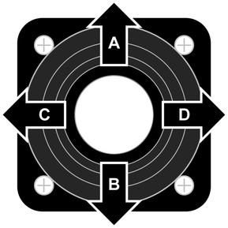

Funktionsbelegung der Bewegungsrichtungen des linken Bedienhebels

Fig. 2950: Funktionsbelegung der Bewegungsrichtungen des linken Bedienhebels
Fig. 2950: Funktionsbelegung der Bewegungsrichtungen des linken Bedienhebels
Bewegungsrichtung | Piktogramm | Betriebsart oder Vorwahl | Kipptaster A) | Funktion |
|---|---|---|---|---|
A | Betriebsart Hebezeug | - | Last an Winde2 senken. | |
Betriebsart Hebezeug | Derrick-Hubzylinder einfahren. oder Schwenkballast einschwenken. | |||
B | Betriebsart Hebezeug | - | Last an Winde2 heben. | |
Betriebsart Hebezeug | Derrick-Hubzylinder ausfahren. oder Schwenkballast ausschwenken. | |||
C | Betriebsart Hebezeug | - | Oberwagen nach links drehen. | |
Taste Montagefunktionen | Nadelausleger senken. | |||
Taste Montagefunktionen | Hauptausleger senken im Derrick-Betrieb B). | |||
D | Betriebsart Hebezeug | - | Oberwagen nach rechts drehen. | |
Taste Montagefunktionen | Nadelausleger heben. | |||
Taste Montagefunktionen | Hauptausleger heben im Derrick-Betrieb B). |


Funktionsbelegung der Bewegungsrichtungen des linken Bedienhebels
A) Manche Kipptaster sind mit mehreren Funktionen belegt. Durch mehrmaliges Betätigen des Kipptasters kann die gewünschte Funktion gewählt werden.
B) Diese Funktion ist standardmäßig am linken Bedienhebel. Ausschließlich nach zusätzlicher Vorwahl „Nadelausleger-Verstellwinde“ ist diese Funktion auf dem rechten Bedienhebel.